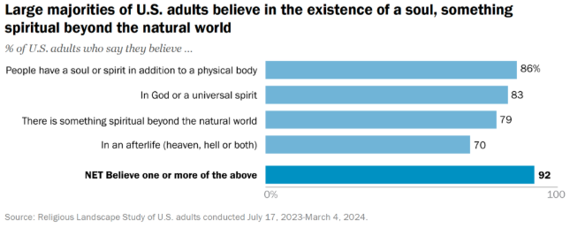
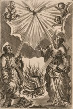
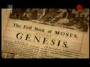
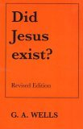

A Problem of History
| What does History say? |
7 Theories on Jesus |
New Discoveries |
200 Years of Failure |
What does History say?
"The actions of Jesus present themselves to the verification of historians.
Nobody today can seriously pretend, in the name of History, that Jesus never existed."
Catechism for adults of the French bishops.
This widely held belief is featured in textbooks and enjoys a broad consensus
This widely held belief is featured in textbooks and enjoys a broad consensus
"No serious scholar has ventured to postulate the non-historicity of Jesus."
O. Betz What do you know about Jesus?
"to doubt the historical existence of Jesus at all...was reserved for an unrestrained, tendentious criticism of modern times into which it is not worth while to enter here"
G. Bornkamm 1960
"The total evidence [for the existence of Jesus] is so overpowering, so absolute that only the shallowest of intellects would dare to deny Jesus' existence."
P. Maier 2005
"No serious historian of any religious or nonreligious stripe doubts that Jesus of Nazareth really lived in the first century..."
C.A. Evans 2009
"He certainly existed, as virtually every competent scholar of antiquity, Christian or non-Christian, agrees, based on certain and clear evidence."
B. Ehrman Forged: writing in the name of God 2011
"It is not historians who propagate the 'Christ-myth' theories."
F.F. Bruce The New Testament Documents: are they reliable?
"To sum up, modern critical methods fail to support the Christ myth theory.
It has 'again and again been answered and annihilated by first rank scholars.'
In recent years, 'no serious scholar has ventured to postulate the non historicity of Jesus' or at any rate very few,
and they have not succeeded in disposing of the much stronger, indeed very abundant, evidence to the contrary."
M. Grant Jesus: An Historian's Review of the Gospels 1995
"I have to say that I do not know any respectable critical scholar who says that any more."
R. Burridge and G. Gould Jesus Now and Then [quote about the Jesus Myth] 2004
"most scholars regard the argument for Jesus' non-existence as unworthy of any response."
Jesus was a common name 2,000 years ago in Galilee,
and some people named Jesus must have been crucified among all the Jews killed by the Romans.
This study is not trying to discredit this eventuality, but to investigate the birth of Christianity.
Particularly, it is challenging the mainstream view that:
"Christianity is based on the life and teachings of Jesus of Nazareth"
Wikipedia Christianity
Something experts are certain of:
"virtually all historians and scholars have concluded Jesus did exist as a historical figure."
Did Jesus Exist?
However, if one goes a little bit deeper, he will rapidly discover a deception in the form of "6 Dogmatic Assumptions".
Indeed, apart from 2 or 3 exotic minds, all these theologians
have assumed (not concluded) that the movement started with a man from Galilee,
probably a Jewish illiterate peasant, who would have been crucified in Jerusalem around 30 CE.
For the rest, there are almost as many theories on Jesus as there are books about him!
"Why is Jesus, alone of all historical figures, so covered by a cloud of unknowing
and a cloak of protective invisibility?
Why is Jesus more unknowable or less reconstructable than any other ancient person
about whom data has survived?"
J.D. Crossan The Birth of Christianity
Undeniably, for more than a hundred years,
theologians have failed to extract the HJ (Historical Jesus) behind the Myth.
"There is nothing more negative than the result of the critical study of the life of Jesus.
The Jesus of Nazareth who came forward publicly as the Messiah,
who preached the ethic of the kingdom of God, who founded the kingdom of heaven upon earth,
and died to give his work its final consecration, never had any existence.
This image has not been destroyed from without, it has fallen to pieces,
cleft and disintegrated by the concrete historical problems which came to the surface one after another."
Well known conclusion of The Quest of the Historical Jesus by Albert Schweitzer
in 1906, still valid today.
At a high level, the MJ (Mythical Jesus) theory is the opposite of any other theory
saying that it was Jesus' life & death that triggered this colossal response among his followers,
as we can see in 'Preaching Jesus Was' (see Jesus in the Epistles).
But in the details, the MJ theory has a lot in common with modern critical scholarship
as they both agree that most of what is attributed to Jesus in the Gospels is fake.
These HJ minimal theories are skeptical of so much that their refusal to tackle the last step,
that Christianity began with a mythical Christ, seems genuinely motivated by a political & ideological Agenda.
Their few attempts to support Jesus' existence have also been notable failures, as attested
by the Did Jesus Exist? by B. Ehrman (2013).
"Whether Christ did, or did not live, has nothing at all to do with
what the churches teach, or with what we believe. It is wholly a matter of evidence and a question of science.
The question is -- what does history say?
And that question must be settled in the court of historical criticism. If the thinking world is to hold to the position that Christ was a real character, there must be sufficient evidence to warrant that belief."
The question is -- what does history say?
And that question must be settled in the court of historical criticism. If the thinking world is to hold to the position that Christ was a real character, there must be sufficient evidence to warrant that belief."
Marshall J. Gauvin
What is at stake?
If the theory supported by this study is correct, it will be, by far,
our most important case of Historical revisionism.
It might also shake the faith of 2.3 billion believers...
"The one duty we owe to history is to rewrite it."
7 Theories, 3 Meanings, 2 Scenarios

1. Loose estimation.
2. Islam and the Crucifixion:
The rejection of the crucifixion is central to Islamic orthodoxy and is supported by a long tradition of scholars who view it as a necessary theological truth. It all comes from the Quran:
The rejection of the crucifixion is central to Islamic orthodoxy and is supported by a long tradition of scholars who view it as a necessary theological truth. It all comes from the Quran:
"But they neither killed nor crucified him—it was only made to appear so. Even those who argue for this ˹crucifixion˺ are in doubt.
They have no knowledge whatsoever—only making assumptions. They certainly did not kill him."
Qur'an 4:157
3. One of the figure behind the ministry in Galilee:
What kind of Man was Jesus?
All HJ theories are split in many different and sometimes contradictory versions:
- Cynic Philosopher
- Liberal Pharisee like a successor to Rabbi Hillel.
- Chasrismatic Hasid like Hanina Ben-Dosa or Honi the Circle-Drawer.
- Essene Heretic.
- Conservative Rabbi.
- Antinomian Iconoclast
- Magician/Exorcist/Faith Healer
- Violent Zealot Revolutionary
- Nonviolent Pacifist Resister
- Apocalyptic Prophet
- First-Century Proto-Communist
- Early Feminist
- Radical Social Reformer
- Hellenistic Hero
- Man of the Spirit
See Historical Jesus Theories by
or Deconstructing Jesus p.15 by .
Dozens of completely contradictory historical Jesus theories are still defended by Academics today.
What kind of God & Savior was Jesus?
"The “Jesus of Faith” is an umbrella term for the gargantuan number of different saviors that inspire
Christianity in all its riotous diversity: The Catholic Jesus and the Orthodox Jesus and those of all
the eastern sects in between, the Lutheran Jesus, the Anglican Jesus, the Presbyterian, the Baptist, Methodist,
and all the other flavors of evangelical Jesuses, the Snake-Handler’s Jesus, the Pentecostal Jesus,
the liberal and the republican Jesus, the KKK’s angry Aryan Jesus and the southern gospel choir’s
Black Jesus, the Seventh-Day Adventist Jesus, the family-friendly Mormon Jesus,
the Jesus being peddled on your doorstep by Jehovah’s Witnesses, the gentle, loving Quaker Jesus
and the dour Calvinist Jesus, the Unitarian and Universalist Jesuses, the out-there woo-woo
New Age Jesuses, the Jesus who embraces gays and lesbians and the Jesus who sternly demands they be cast out,
not to mention the Muslim Jesus impressed into service as a true prophet of Islam.
It seems no matter where you fall on the religio-socio-political spectrum, it’s as if there is a Jesus made to order
just for you – in over 33,000 varieties, according to the World Christian Encyclopedia.
Perhaps the real number is closer to 2.18 billion; with no two believers sharing the same Jesus…
Fortunately for us, we can leave the unending stream of those competing Jesuses of Faith
alone and concentrate on the so-called “real” Jesus."
Fitzgerald, David. Jesus: Mything in Action, Vol. I p. 86-87
What kind of Myth was Jesus?
The two Jesus Myth theories say that Christianity began with the belief in a Mythical Christ,
with no connections whatsoever with a recent man who would have lived in Galilee or elsewhere.
They place his act of salvation (crucifixion) in
- Time: the mythical past
- Location: somewhere unknown on earth or between earth and heaven in the supernatural world.
Other Theories about Jesus
Other paradigms about Jesus that are not in the table above
can often be integrated in one of these categories. For examples:
-
Part of the Cryptic Myth theory:
The Jesus that the Epistles authors had in mind was someone who really lived, but in a distant past. For example, Alvar Ellegård, has identified the Jesus of the early Christians as an actual historical figure known to us from the Dead Sea Scrolls, the Teacher of Righteousness of the Qumran Essenes. - Part of the Cryptic theory:
Jesus did exist and Christianity was founded by his life and death but the myth has entirely recovered the character so there is no way to say anything about him. See Alfred Loisy (1857-1940), Charles Guignebert (1867-1939), Rudolf Bultmann (1884-1976).
"All great advancements in science begin as challenges to commonly held theory;
every great advance in the history of biblical scholarship has begun as blasphemy.
Take the Old Testament: It’s no longer taboo for historians to declare that Adam, Eve,
Abraham, Isaac, Jacob, Job, Jonah, Joseph, Joshua, Moses, Noah, Sampson, Ruth and Boaz,
and a sizable portion of the Old Testament’s other most prominent major characters never existed.
They are purely literary creations. The first historians to argue the Patriarchs were mythical
had to square off against a firm and broad consensus; now, far from being some fringe notion,
the patriarchs’ nonhistoricity is the most widespread mainstream view among scholars."
Fitzgerald, David. Jesus: Mything in Action, Vol. I p. 34
"...almost every critical biblical position was earlier advanced by skeptics."
Raymond Brown
New Discoveries
Many texts have been discovered since the end of the XIXth century
and they all shed light on the context when it all started.
Particularly, they tell us that early Christianity was much more diverse than expected.
Countless Jewish-Christian-Pagan sects were competing against one another, with more or less things in common.
We will review them in chapter 5: Jesus outside the Bible.
| Discov. | New Texts | Manuscript | Pub. |
| 1873 | Didache | Codex Hierosolymitanus 11 CE |
1883 |
| 1896 | Gospel of Mary, Sophia of Jesus Christ, Apocryphon of John, Act of Peter... |
Berlin Codex 5 CE |
1955 |
| 1909 1912 |
Odes of Solomon | Cod. Syr. 9, 15 CE Codex Nitriensis, 10 CE |
1912 1970 |
| 1945 | Gospel of Thomas Gospel of Philip... |
Codex of Nag Hammadi 4 CE |
1956 |
| 1947- 2021 |
Community Rule, War Scroll, Pesher on Habakkuk, The Rule of the Blessing. |
Dead Sea Scroll 3 BCE to 1 CE |
2000 |
| 1970 | Gospel of Judas | Codex Tchacos 3 CE |
2006 |
We have also deepened our understanding of the first-century context.
We will see in Main Findings below that:
- Archaeology killed much of the OT.
- The NT is a a patchwork of many different ideas, that already circulated in the Jewish or Hellenic world at that time.
- Nazareth did exist in the early first century and was a town of some standing and income.
- Synagogues existed in 1st-century Palestine during the time of Jesus.
Since the beginning of the XIXth Century, scholars have suggested the two-source hypothesis.
It posits that to create their Gospels, Matthew and Luke used the Gospel of
Mark and an additional source, Q, now lost and named for the German word Quelle meaning “source”.
Recently, We also got some quality works with Josephus:
- The style of the Testimonium is more Eusebian than Josephan (Olson 2013; Feldman 2012)
- All manuscripts of the Jewish Antiquities are descended from the one used and possibly even produced by Eusebius (Whealey 2008; Carrier 2012).
- The article "Origen, Eusebius, and the Accidental Interpolation in Josephus, Jewish Antiquities 20.200" has been peer-reviewed and published in the Journal of Early Christian Studies (Carrier, 2012)
The domain is alive and there are
many new books every year about Jesus.
But despite these discoveries and countless studies about him,
our knowledge of the Historical Jesus has not improved much.
our knowledge of the Historical Jesus has not improved much.
200 Years of Failure
As of 2025, there have been three quests on the HJ (Historical Jesus), period with more interest and books among scholars.
They seek to find the man behind the many traditions surrounding Jesus.
It is a peculiarly modern quest, unlike the ancient or medieval worlds, our age wants the facts.
Ancient, medieval, early Christians never had such a thing.
Who would have questioned at that time the legitimacy of Christian faith in Jesus Christ?
1 - The First Quest 1750-1930
- Hermann Samuel Reimarus
- David Friedrich Strauss
- Ernest Renan
- Albert Schweitzer Son of a pastor
Schweitzer ended the quest by noting how each
scholar's version of Jesus seemed little more than an idealized autobiography of
the scholar himself- a criticism that still haunts Jesus research to this day.
The No Quest
- Rudolf Bultmann Son of a minister
- Martin Dibelius Son of a pastor
Scholars asserted the Quest for the HJ was impossible because of insufficient evidence,
and considered it both historically impossible and theologically illegitimate to write a biography of Jesus.
Yet, they tended to present Jesus as an Existentialist Philosopher.
2 - The Second Quest (1953-1970)
- Gunther Bornkamm Pastor
- Ernst Kasemann Pastor
- James M. Robinson Minister
- John A. T. Robinson Bishop
- Edward Schillebeeckx Priest
Theologians emphasized how the redaction of the New Testament resulted from a process over time,
so that it included early textual layers, around which later and later layers crystalized.
The goal would be the detection of such early text.
3 - The Third Quest 1980-2003
Here, there has been at least one more split on how they view Jesus:
Wandering Cynic Wisdom Teacher
- Marcus Borg Christian, wife priest
- John Dominic Crossan Former priest
- Robert Funk Christian Theological Seminary
- Burton Mack Prof. at Claremont School of Theology
- Robert M. Price Former Baptist Minister
- John Shelby Spong Bishop
- Leif Vaage Evangelical Lutheran Pastor
- John S. Kloppenborg Ph.D. in Theology
- Members of the Jesus Seminar
Apocalyptic Prophet of the Kingdom of Heaven
- E.P. Sanders Protestant
- Raymond E. Brown Catholic priest
- John P. Meier Catholic priest. Papal gold medal Bib. Inst.
- Geza Vermes Former Catholic priest - Jewish
- N. T. Wright Dean of Lichfield cathedral
- Ben Witherington Conservative Methodist
- Hyam Maccoby Jewish
- Gerd Theissen Protestant, wrote to support Biblical Faith
- Bart Ehrman Seminarian of the Moody Bible Institute
So I suggest a fourth quest:
4 - The Jesus Exist Quest 2026-...
Everyone noticed that almost all Historians on Jesus are in reality Theologians.
Most of them are (or were) also priests/pastors/ministers or had a spouse or father who was.
“It is a rare scholar in the field whose past does not include an intense Christian or Jewish commitment.”
Rabbi Jon D. Levensen, p.30
A Failure
Despite all these books, discoveries and our better knowledge of the context,
we have barely done any progress on the HJ.
Even worst, contrary to virtually every other field of science or history,
the more we study Jesus, the less we know about him.
Most advancements in the field come at the expense of the HJ!
“The quest for the historical Jesus has failed spectacularly...
Progress is supposed to increase knowledge and consensus and sharpen the picture of what happened (or what we don’t know), not the reverse.
Instead, Jesus scholars continue multiplying contradictory pictures of Jesus, rather than narrowing them down and increasing their clarity – or at least reaching a consensus on the scale and scope of our uncertainty or ignorance...
This has left us with a confused mass of disparate opinions, vast libraries of theories and interpretations essentially impossible to keep up with, and no real attempts at improving or criticizing the worst and gathering the best into any sort of coherent consensus view of what actually happened at the dawn of Christianity, or even during its first two hundred years.”
Instead, Jesus scholars continue multiplying contradictory pictures of Jesus, rather than narrowing them down and increasing their clarity – or at least reaching a consensus on the scale and scope of our uncertainty or ignorance...
This has left us with a confused mass of disparate opinions, vast libraries of theories and interpretations essentially impossible to keep up with, and no real attempts at improving or criticizing the worst and gathering the best into any sort of coherent consensus view of what actually happened at the dawn of Christianity, or even during its first two hundred years.”
R. Carrier. Proving History pp 13
"As a historian I do not know for certain that Jesus really existed,
that he is anything more than the figment of some overactive imaginations....
In my view, there is nothing about Jesus of Nazareth that we can know beyond any possible doubt.
In the mortal life we have there are only probabilities.
And the Jesus that scholars have isolated in the ancient gospels, gospels that are bloated with the will to believe,
may turn out to be only another image that merely reflects our deepest longings."
Robert W. Funk, Jesus Seminar Founder and Co-Chair
A Theologian Reserved Domain
A Christian World
Christianity in the United States
Christianity went down in the U.S. from 90% in 1972 to 62% in 2024,
mainly due to new generations of non-believers.
But it is still very present in western culture.
We will rapidly review below its influence on education, neighborhood communities, laws, politics...
which directly or indirectly impacts the HJ studies.
In 2024, the U.S. is still overly Christian, but, following Europe, it is declining slowly but surely.
US Religious Composition
Each generation believes less than the previous one,
so that Gen Z and younger Millennials have the less number of believers.
Age is the most important criteria.
Who knows the future? It could be that:
- America's Christian majority is shrinking, and could dip below 50% by 2070.
-
Or the decline stopped and faith goes up again.
Researchers found the "secular surge" has plateaued in the last four years.After years of decline, the Christian share of the U.S. population stabilizes
But in the long term, it is obvious that Christianity won't be able to escape the fate of any other religion.
Other somewhat important criteria are Gender and Race.
The two opposite of the probability spectrum would be an old black woman vs. a young Asian male.
Christianity was invented by Europeans and came with them when they conquered America. But is in minority in Asia and Africa.
Bible Prestige
The Bible has an enormous prestige, surely mostly by Christrians.
Soul, Spirit, Afterlife...
Not specifically Christians, ideas of Supernatural, like Miracles, the Soul, Spirit & Remote God are still very popular today,
and will certainly remain for some time.

Source Religious Landscape Study by Pew Research Center
Morality
There is still in 2025, about 1 on 3 persons who think that it is necessary to believe in God to be a good person.
See Pew Research Center Spring 2022 pdf
Faith Communities
According to the National Congregational Study Survey, there are an estimated 380,000 churches in the U.S.
More than 150 million Americans, almost half the population, are members of faith congregations,.
That include many scholars who write about Jesus.
Christian Fundamentalists Sects
There are many Christian churches in the world and they all have different and sometimes opposed doctrines.
Particularly, there are in the United States a plethora of Christian fundamentalists sects that still claim the inerrancy of the Scriptures:
Independent Baptist,
Lambeth Quadrilateral,
Traditionalist Catholicism,
Conservative Holiness Movement,
Mormon fundamentalism,
Reformed fundamentalism like the Orthodox Presbyterian Church
and many evangelical Nondenominationalism...
Politics
The Congress is more religious than the General Public, especially more Christians (88% vs 71%) and Jewish (6.2% vs 2%).
See religious composition of the 118th Congress
and In
God we trust: why Americans won’t vote in an atheist president.
Views of Presidential Traits
When questioned about comments and actions deemed by many to be homophobic,
the new Republican US House speaker, Mike Johnson, told Fox News in oct. 2023:
"well, go pick up a Bible off your shelf and read it – that’s my worldview. That’s what I believe and so I make no apologies for it."
We could multiply these kinds of examples almost indefinitely.
Laws
As of July 2023, the Supreme Court of Justice composition is heavily Christian conservative with six Catholics and one of each Anglican, Protestant and Jewish.
In 2005, four of their judges argued that displaying the Ten Commandments on government land is a legitimate tribute to the nation’s religious and legal history.
In 2024,
Louisiana will require the 10
Commandments displayed in every public school classroom, the latest move from a GOP-dominated Legislature pushing
a conservative agenda under a new governor. This is bad for two reasons:
- A clear violation of the separation between Church and State.
- These Commandments are below our current moral standard.
Education
Every morning, across the country, all students in Elementary, Middle and High schools recite the pledge of allegiance that includes the words
“one nation under God," and for the vast majority, it is the Christian God, Jesus.
The majority of biblical historians in academia (57%) are employed by religiously affiliated institutions.
Most of the universities in the U.S. have a major workforce of teachers and
researchers devoted to something-or-other relating to the bible. In 2020 there were about:
- 315,000 theologians in the workforce (0.2% of the total workforce)
- 27,000 degrees awarded for the year
See DataUsa: Theology.
Liberty University is
a conservative, private evangelical Christian university in Lynchburg, Virginia, affiliated with the Southern Baptist Convention of Virginia.
It was founded in 1971 by Jerry Falwell Sr. and Elmer L. Towns.
Well, it has since experienced rapid financial growth, with assets rising from $259 million in 2007 to over $2.5 billion by 2020...
So you might have less believers, but it seems you have much more money, thanks to megadonors.
A Budget of $1200 Billions a Year
There is a whole economic ecosystem based on the Bible for which so many people depend on, including most of our experts.
It exists almost everywhere in the world and particularly in the United States.
A study done in 2016 shows that
the Faith economy is worth $1.2tn a year (mid-range estimate)
– more than the combined revenues of the 10 biggest tech firms in America...
money for which the church doesn't pay a penny of tax.
“the faith sector is undoubtedly a significant component of the overall American economy,
impacting and involving the lives of the majority of the US population”.
The Guardian:
Religion in US 'worth more than Google and Apple combined'
“It is difficult to get a man to understand something, when his salary depends upon his not understanding it.”
Upton Sinclair
And what to think about the top 10 richest Pastors in America (Estimated Net Worths):
- Kenneth Copeland ($300-760 million) owns private jets.
- Joel Osteen ($100 million+).
- Pat Robertson ($100 million)
- Steven Furtick Jr. ($60 million)
- Andy Stanley ($45 million).
- Creflo Dollar ($30 million).
- Rick Warren ($25 million).
- TD Jakes ($18 million+).
- Jesse Duplantis ($120 million).
- Benny Hinn (approx. $10-40 million)
The Money & Power to Bias HJ Studies
We will see in Ban & Retaliation that pressure of Christian megadonors
is often the main reason for the regular dismissal of Biblical teachers & scholars.
Acknowledging Christianity’s impact today requires recognizing the constraints on studying its origins.
Historically, these constraints were immense. The longstanding dominance of Christian tradition has created
a uniquely biased context for the Quest on the HJ.
A Hidden Agenda
"Most men who write on Christian origins are trained theologians,
committed to certain conclusions before they begin."
G.A. Wells
As we have seen in A Quest of 200 Years, the professionals of the New Testament are theologians and
most of them are or have been priests, pastors, ministers...
The Christian Church is everywhere in their education and life.
They have many ties with it and the accepted theological wisdom on Jesus has always been that the Gospels and Acts
provide the groundwork for any historical study of Jesus, in spite of admissions that they have grave weaknesses as historical sources.
A Notorious Issue
"I am concerned, not with an unattainable objectivity, but with an attainable honesty."
"But that stunning diversity is an academic embarrassment.
it is impossible to avoid the suspicion that historical Jesus research is a very safe place
to do theology and call it history, to do autobiography and call it biography."
J.D. Crossan The Historical Jesus (1993)
"If scholarship can be said to have repressed emotion, then,
as Freud said, it returns in other forms, perhaps as ideology or dogmatism.
It is always present as an invisible hand guiding interest, commitment, choice, judgement, and the framing of meaning."
Hal Childs Myth of the Historical Jesus
"nearly every one of them [NT scholars] presents what they would like the church, or others with faith, to think about Jesus.
Clear examples of this can be found in the studies of Marcus Borg, N.T. Wright, E.P. Sanders,
and B.D. Chilton—in fact,
we would not be far short of the mark if we claimed that this pertains to each scholar—always and forever.
And each claims that his or her presentation of Jesus is rooted in the evidence, and only in the evidence."
Scot McKnight Jesus and His Death
"But when 90 percent of the applicants [to NT studies] are Protestant Christians,
a vast majority of Christian academics is a natural result. Moreover,
the figure of Jesus is of central importance in colleges and universities which are overtly Protestant or Catholic,
and which produce a mass of books and articles of sufficient technical proficiency to be taken seriously.
The overall result of such bias is to make the description of New Testament Studies as an academic field a dubious one."
Maurice Casey
In September 2000 the annual British New Testament Conference, held in Roehampton, opened with both a glass of wine and a Christian prayer,
the perfect symbols of middle-class Christianity, some might say...
The glass of wine I can accept, but should an academic meeting that
explicitly has no official party line really hold a collective prayer at its opening,...?
James Crossley
Neil Godfrey’s (and frequent contributor Tim Widowfield) Vridar blog is one of the finest sources of reports
on relevant issues in bible studies and Jesus historicity. Here are just three posts worth reading for our discussion here:
All of that from Fitzgerald, David. Jesus: Mything in Action, Vol. I pp.
It seems that such a shift in a highly conservatism environment will take time.
A Self-Preservation Agenda
Hector Avalos (1958-2021) -Harvard Phd of Philosophy and former Pentecostal preacher-
argues that biblical studies, as we know it, should end, because it is just religious apologetics, not an academic discipline or a branch of scholarship.
In this radical critique of his own academic specialty, he outlines two main arguments:
- First, academic biblical scholarship has clearly succeeded in showing that the ancient civilization that produced the Bible held beliefs about the origin, nature, and purpose of the world and humanity that are fundamentally opposed to the views of modern society. The Bible is thus largely irrelevant to the needs and concerns of contemporary human beings.
- Second, Avalos criticizes his colleagues for applying a variety of flawed and specious techniques aimed at maintaining the illusion that the Bible is still relevant in today's world. In effect, he accuses his profession of being more concerned about its self-preservation than about giving an honest account of its own findings to the general public and faith communities.
...He laments that the publishing industry and academia have such a vested interest in keeping our "bibliolatry" worship alive...
He shows that biblical scholarship, far from being a neutral and objective enterprise,
is motivated even today by theological presuppositions."
“Can biblical scholars persuade others that they conduct a legitimate academic discipline?
Until they do, can they convince anyone that they have something to offer
to the intellectual life of the modern world? Indeed, I think many of us have to convince ourselves first!”
Phillip DaviesDo We Need Biblical Scholars? 2005
We all have our own biases, of course; that’s no crime. The problem is that in this case their particular bias is a deal killer.
Ask yourself: how many Christians do you suppose are open to entertaining the idea that the lord and savior they
depend on for their salvation – not to mention their salaries – might never have existed?
As nonbelievers, we don’t need Jesus to be a myth. If it turns out the mythicists are wrong,
and one day some good evidence for a real Jesus gets uncovered,
it’s not as if Christianity will suddenly start making sense. We’ll still be perfectly happy heretics.
It’s no skin off my atheist nose if it turns out there was a Jesus after all,
but Christian biblical scholars sure as hell can’t say the same if their
situation is reversed. Christians can’t even enjoy a relaxed agnosticism about the mere possibility of mythicism.
They need Jesus NOT to be a myth."
Fitzgerald, David. Jesus: Mything in Action, Vol. I (p. 31)
A Theological Agenda
A lot of Christian Universities openly admit having no interest in pursuing non-biased study.
"Everything we do at Moody falls under the authority of the Bible, which
declares timeless truth that is relevant today and throughout every generation.
We believe that understanding and sharing God's Word is a lifelong journey.
And we're committed to providing encouragement for you in your walk with Christ."
B. Ehrman and many other scholars are their products.
Which explains an obvious bias against the Jesus Myth:
"The theory that Christianity could have begun without an historical Jesus of Nazareth
has been adamantly resisted by New Testament scholarship since it was first put forward some 200 years ago.
It has generally been held by a small minority of investigators, usually 'outsiders.'
An important factor in this imbalance has been the fact that, traditionally,
the great majority working in the field of New Testament research have been religious apologists, theologians,
scholars who are products of divinity schools and university religion departments, not historians per se.
To suggest that a certain amount of negative bias may be operating among that majority
where the debate over an historical Jesus has been concerned, is simply to state the obvious.
Nor is such a statement to be considered out of order, especially in the face of the common 'argument'
so often put forward against the mythicist position: that the vast majority of New Testament scholars
have always rejected the proposition of a non-existent Jesus, and continue to do so.
In fact, the latter is simply an 'appeal to authority' and cannot by itself be given significant weight."
E. Doherty
A Conservative Agenda
How Open to New Ideas?
How Open to New Ideas?
These institutions are perfect examples of sclerose and resistance to change.
"The Servite major seminary was near Chicago but we students lived in complete isolation from the outside world.
Monastic life meant celibacy and liturgy, work and recreation, silence and study.
The curriculum was designed for safety rather than originality; obedience was the supreme virtue;
discussion and debate were hardly encouraged."
J.D. Crossan
I had supposed that scholars were dedicated to the pursuit of truth,
wherever that might lead, and that new ideas would always be welcome.
This, however, is only partly true. Before new ideas come, scholars have reached a consensus,
and their position as authorities depends upon their agreeing with that consensus.
Their teachers, whom they normally honoured, had taught them the consensus;
they had written their books assuming it, and they had often helped to develop it themselves.
They were not at all likely, therefore, to think that they and their fellow experts had been wrong,
and that a new scholar, of whom they had not heard, was in a position to put them right.
But there is another problem: most scholars of the New Testament have religious loyalties:
they want the text [Bible] to be orthodox, or historical, or preachable, or relevant.
So any new interpretation which does not fulfil these conditions is not likely to be approved."
Michael Goulderp. 28 In Five Stones and a Sling: Memoirs of a Biblical Scholar
"Scholars who have assumed a position over many years do not quickly recant it and publicly admit their error;
nor can a novel hypothesis expect to carry the day at once in a conservative profession.
It may be particularly difficult to shift opinion over texts which are fundamental to the faith of the critic."
Michael Goulder p. 134
“As is the case with all paradigm shifts, one must expect resistance from those who have benefitted from business as usual.
I no longer expect scholars of my generation to accept my work with open arms; if acceptance occurs at all, it will come from future generations.”
R. MacDonald
Like we have seen in the decline of Christianity in the U.S. in A Christian World,
progress can come with new generations of scholars.
See on Vridar blog How
Open To Radically Fresh Ideas Are New Testament Scholars Really?”
The ultimate emergence of the Christian religion represents a human invention–in terms of its historical
and cultural significance, arguably the greatest invention in the history of Western civilization.
B. Ehrman Jesus Interrupted
👏 👏 👏
Six Dogmatic Assumptions
"I have taken it for granted that Jesus of Nazareth existed."
Jesus and the Victory of God
Jesus and the Victory of God
"I am not even interested in trying [to prove that Jesus existed]"
J.D. Crossan
"The doubt as to whether Jesus really existed is unfounded and not worth refutation.
No sane person can doubt..."
Jesus and the Word
No sane person can doubt..."
B. Ehrman himself asserted that the present state of New Testament scholarship is such
that an established scholar should present his Life of Jesus, without considering whether this figure, in fact, lived as a historical person.
The assumptions implied reflect a serious problem regarding the historical quality of scholarship in biblical
studies—not least that which presents itself as self-evidently historical-critical.
Six undisputable historical facts
In The Historical Figure of Jesus E. P. Sanders suggests this list:
- Jesus was baptized by John the Baptist.
 Epistles
Epistles - He was a Galilean who preached and worked miracles. Epistles
- He limited his activity to Israel. Epistles
- He called up those who would become his disciples. Epistles
- He raised controversy over the role of the temple. Epistles
- He was crucified outside Jerusalem by the Roman authorities. Epistles
However
"none of this is told of Jesus in the extant Christian Epistles (Pauline and others)
which are either earlier than the gospels or early enough to have been written independently of them."
which are either earlier than the gospels or early enough to have been written independently of them."
G.A. Wells
Earliest Christianity (1999)
The list of E. P. Sanders contains two additional 'facts' that work as well in the myth:
- After his death Jesus’ followers continued as an identifiable movement.
 Epistles
Epistles - At least some Jews persecuted at least parts of the new movement. Epistles
While Stanley Porter added four more in The Criteria for Authenticity in Historical-Jesus Research: Previous Discussion and New Proposals (2000):
- Jesus was probably viewed as a prophet by the populace.Epistles
- He often spoke of the kingdom of God.Epistles
- He criticized the ruling priests as part of his Temple controversy.Epistles
- He was crucified as ‘king of the Jews’ by the Romans.Epistles
Therefore, the entire community (or almost) of scholars are assuming at least these six 'facts' before they start any study.
Yet, these 'facts' exist solely in the Gospels ... which are the own target of their investigation!
They also assume that the first apostles like Paul:
- lost all interest in everything Jesus is supposed to have said or done,
- and suddenly turned this unknown man they have never seen, into the Son of God, Sustainer of the Universe and World's Sin Redeemer.
Circular Reasoning
Following these asumptions, it is mainly circular reasoning. B. Mack puts it as a 'catch-22':
"The myth embodied in this later product (the New Testament) created and verified the conventional picture of Christian origins,
and this conventional picture provided the explanation for how the New Testament came to be written and by whom:
a "circular, interlocking pattern of authentication" for the official view of how the new religion began."
"I can think of no line of reasoning that is not, in the end, strictly circular."
Dale Allison referencing C. H. Dodd
"When the procedure of historical-critical scholarship is dissected in this logical manner, it crumbles like a house of cards.
Circular argumentation is false and will always remain false. Nothing can change that.
A scholarly assumption may look like a legitimate argument, but contrary to genuine argument, it cannot be falsified...
It is characteristic of such cases that there is no [i]tertium comparationis,
no external evidence that may prove the argument to be correct and not a baseless assumption."
Niels Peter Lemche The Old Testament: Between Theology and History
"Thus, the reader should be aware that the clash between mythicists and historicists is not a clash
between loons similar to those who think the moon landings were faked and NASA,
or between Creationists and real scientists, as Ehrman
would have it. That is mere rhetoric, lazy, cheap shots...
I suspect that if you compared the bookshelves of most people writing on mythicism with Ehrman’s own,
they would look very much alike. None of the major mythicist writers can remotely be described as anti-science or anti-scholarship.
Again, the problem is not denial of reality, but a clash of competing interpretive frameworks..."
Michael Turton
When will NT scholars start to think
outside their "seminary boxes"?
outside their "seminary boxes"?
A Biased Methodology
Apologists are pleading for a Jesus' exception:
"the criteria reasonably used by historians writing about important political figures
such as Julius Caesar need modification in dealing with the historicity of Jesus"
Jesus: Evidence and Argument Or Mythicist Myths 2014
On Jesus Existence
As we have seen in the previous Tab "6 Dogmatic Assumptions",
scholarship almost never addresses the existence of Jesus.
The few times they try, their criteria are fallacious.
Some Aramaic Wordings
In his book Did Jesus Exist? B. Ehrman
argues that the synoptic gospels are based on earlier written traditions that are themselves based on earlier oral traditions
that go back close to the "traditional date of the death of Jesus" (p93).
Therefore Jesus existed.
There is absolutely no reason to believe any particular statement is historical just because it might derive from an Aramaic source.
- Carrier points out that actually demonstrating an Aramaic source, as opposed to Semitic Greek, or the use of the Septuagint or a targum (an Aramaic paraphrase of the Hebrew scriptures) is a lot harder than is pretended anyway.
- The earliest Christians spoke a Semitic-influenced Greek (a sort of ancient Spanglish), and their scripture, the Septuagint was also written in a Semitized Greek. In addition, many early Christians were bilingual (like Paul, according to Acts 21-22).
- Aramaic was spoken by millions, continually, for centuries, across a broad geographical range, far beyond just Judea. Besides, stories, revelations, quotations and anything else one likes could be made up in Aramaic (and even added into an existing story), by anyone, just as easily as any other language. So even if an Aramaic source could be identified and demonstrated, that still tells us nothing about its authenticity, or date or place of origin.
Adapted from Fitzgerald, David. Jesus: Mything in Action, Vol. I p. 122
Embarrassment: the Treason of Judas
According to many Catholic NT scholars like and Régis Burnet,
the story of Judas is, by itself, a proof of the veracity of the story.
See this
article in 'Le Monde' in French (my translation below)
or book ,
"First, on the historical side : the twelve apostles really existed. The four Gospels are unanimous on this point,
and not only the entire posterieur tradition attest it, but the presence of Judas in this small group constituates a famous proof."
- Multiple attestation is worth nothing when they all depend on the same single source.
- Many Christian's traditions don't attest it, including the Epistles.
See tabs No People and No Passion in 2. A Critical Bug in Mainstream Scenario
"Who would have brought this traitor from the intimate circle of Jesus if it would have been invented?
This treason is too troubling to not be historical."
- The argument has no value. Fictional stories of betrayals are very common in the Bible, the Hellenic world and more broadly in any culture.
- It has a symbolic meaning. It serves the purpose of the evangelist to represent the Jews as cold-hearted and duplicitous.
- It is a pastiche from Scriptures."Even the friend whom I trusted, who ate at my table, has lifted up his heel against me"Psalm 41:9. Also in Obadiah 7, Psalm 55:12-13, 109, Zechariah 11:10.
- And that's what the authors say
“Brothers and sisters, the Scripture had to be fulfilled in which the Holy Spirit spoke long ago through David concerning Judas, who served as guide for those who arrested Jesus. He was one of our number and shared in our ministry.”Acts 1:16-17 and the following Acts 1:18-20 that quotes Psalm 69:25 and Psalm 109:8.
- Many details don't make sense.
See Betrayal and Arrest in chapt 4. Jesus in the Gospels
All these elements have led secular critical scholarship to the belated conclusion that Judas
himself was probably an invention of .
French newspaper "Le Monde" should have challenged these claims by Christian apologist .
Embarrassment: Jesus has been crucified
Supposedly, the crucifixion of Jesus is an example of an event that meets the criterion of embarrassment.
This method of execution was considered one of the most shameful and degrading in the Roman world,
so it is the least likely to have been invented by the followers of Jesus.
See Wikipedia Criterion of embarrassment.
With "James Brother of the Lord" in Galatians 1:19,
it is the main argument, the so-called 'key data' of B. Ehrman in his book
Did Jesus Exist? The idea is so crazy that they could have not invented it.
They needed a real character and event.
This is a very weak argument, even negligible.
These first century Jews got their crucified Messiah from
Scriptures.
They contained all the necessary ingredients for that
Isaiah 53, Hosea 6:2, Psalm 119:120, Psalm 22:16, Zechariah 12:10...
Plus the idea must not have been so crazy for them since at the end...they got it!
Furthermore, how does it compare with other savior figures or superheroes?
- Attis vs. Jesus
| Jesus was preached crucified | Attis was preached castrated |
"Jesus crucified" was a stumbling block for many
1 Corinthians 1.22-24
|
"Attis castrated" was a stumbling block for many
Augustine City of God 6.10-11
|
| Therefore, Jesus was an actual historical man crucified | Therefore, Attis was an actual historical man castrated |
R. Carrier On The Historicity of Jesus
"The initiates of the Attis cult flabbergasted the Romans by dressing up as women,
complete with bleached-blond hair and heavy make-up, and, in imitation of their lord,
castrating themselves in public during their annual parade to offer their genitals to Attis’ consort,
the goddess Cybele. And yet no one tries to argue that Attis must have been real, because who would invent a castrated drag queen god?"
Fitzgerald, David Jesus: Mything in Action, Vol. I p. 149
Other mythical characters have also been
- raped/abducted like Persephone, the daughter of Zeus and Demeter
- dismembered in 42 pieces like Osiris
- or saw in two like in the Martyrdom of Isaiah...
- Spiderman vs. Jesus
"Now, what do we get if we apply the Criterion of Embarrassment to the Spiderman character.
What kind of superhero:
- has to sew his own costume?
- has doubts about his self-worth and often threatens to quit being a superhero?
- lives in a crummy apartment and has problems paying his rent?
These type of things never happen to Superman or Batman. Why would someone write a superhero story and make the character
continue to be awkward even after he becomes a superhero?
By the Criterion of Embarrassment we must declare that Spiderman is a real historical person."
From a post by PhilosopherJay on the Internet Infidels Discussion Board
- Obelix vs. Jesus
Why would you create a hero obese, simpleton, susceptible and who only thinks to eat wild boars and hit Romans?
By the Criterion of Embarrassment we must declare that Obelix was a real historical person.
I don't think it is necessary to continue the list.
On what Jesus said and did:
Several Controversial Criteria
Several Controversial Criteria
Assuming Jesus' historical existence, the criteria used to filter historical material from later traditions,
though arguably limited, might represent the best available tools in the field.
This analysis explores five primary, widely recognized criteria scholars employ in the quest for the historical Jesus.
Here are the ones of the Jesus Seminar:
- Multiple Attestation
if many people say it... See WikipediaFor example, the chief argument of J. Meier (a Roman Catholic priest) for the historicity of Jesus' miracles rests principally on the criterion of multiple attestation:"To sum up: the historical fact that Jesus performed extraordinary deeds deemed by himself and others to be miracles is supported most impressively by the criterion of multiple attestation of sources and forms and the criterion of coherence. The miracle traditions about Jesus' public ministry are already so widely attested in various sources and literary forms by the end of the first Christian generation that total fabrication by the early church is, practically speaking, impossible."So widely attested? These miracles cannot be found in any document of the first century besides the Gospels. They are notably missing from all the Epistles, the Didache, Thomas, 1 Clement and even from the hypothetical Q, except in its latest layer.The use of 'home made' criteria in historical Jesus research, like multiple attestation, gives the enterprise an appearance of scientific objectivity that may be deceptive. Logically, there is little reason why multiple attestation alone should indicate historical reliability, and there are certainly not as many useful independent sources for Jesus' miracles as Meier supposes.Example of a fake story satisfying multiple attestation:The Angels of Mons: The Bowmen and Other Legends of the War by Arthur MachenConsider the widespread story of the angel(s) who supposedly intervened on behalf of the British Army during the retreat from Mons in August 1914.The story takes a number of forms, from a version in which an angel simply guided the retreating British soldiers to safety, to more dramatic accounts in which one or more angels helped stem the German advance.Despite the dearth of genuine eyewitnesses to this miraculous intervention, the story would easily have satisfied the criterion of multiple attestation as early as 1915.(1)But one should not conclude from this that the story was at all likely to be based on historical fact; its spread probably had more to do with wishful thinking under the stress of wartime conditions, and its origin seems to have been a short story published in an evening newspaper.Since this process took place in twentieth-century Britain it is relatively easy to trace. If all that had survived had been the accounts of people who were convinced that the story of divine intervention was true (which is roughly equivalent to the type of material on which we have to rely for the historical Jesus), we should have to say that the criterion of multiple attestation was amply fulfilled.But if multiple attestation can result merely from the popularity of a story, not its truth, after a single year, in twentieth-century Britain, it is hard to see why it should be even a remotely reliable criterion for the historical value of Jesus material three or four decades later than the time of Jesus.(2)(1) For the spread of the story by 1915, see Arthur Machen The Angels of Mons: The Bowmen and Other Legends of the War (London: Simpkin, Marshall, Hamilton, Kent & Co.,2nd edn, 1915).In his introduction Machen suggests how the various versions of the story originated with his (purely fictional) short story entitled 'The Bowmen', published in the London Evening News, 29 September 1914.(2) The story of some form of miraculous intervention at Mons was not only widespread but widely believed, to the extent that some people refused to believe Machen when he explained that he had made it up.Adapted from Eric Eve Journal for the Study of the Historical JesusIn reality, all the extant records about the HJ have a dependency on a single source: the Gospel of Mark -with possibly the exception of a hypothetical document called Q that is examined in the The Gospels page, and three or four references that are debating in chapter 6. - Matching the Environment
if it fits a Palestinian Jewish environment in 30 CE...Unfortunately, scholars realized it was equally possible that evangelists could have simply put on Jesus' lips common Jewish opinion. We are well aware of the tendency to ascribe one's favorite sayings to one's favorite sage:- Some sayings are ascribed to several different names in the Mishnah
- The words of king Solomon are reported in many documents: Book of Proverbs, the Wisdom of Solomon, Ecclesiastes, Odes of Solomon, the Psalms of Solomon, the Song of Solomon, the Testament of Solomon or the Key of Solomon!
- Dissimilarity/Distinctiveness
if it doesn't fit a Palestinian Jewish environment in 30 CE... See Wikipedia"Because no one would attribute anything really odd or eccentric to him, and therefore it is so. Its very oddity and eccentricity are testimony to its truth or to its historical veracity."Shaye J.D. Cohen (an ordained rabbi)
A silly criterion in my opinion.- Spaghetti Monster vs. JesusThe Church of the Flying Spaghetti Monster
Looks very eccentric to me ;-)- Nephi vs. JesusThe Book of Mormon by Joseph Smith describes the life and events of a band of prophets: Nephi, Jacob, Enos, Jarom, Omni, Mosiah, Alma, Helaman, Ether, Moroni... About 2,000 years before Christopher Columbus, the first one, Nephi crossed the Mediterranean Sea and Atlantic Ocean to start two civilizations, the Nephite and Lamanite who is, for the last one, the ancestor of American indians!
In any case, it appears that, except little details like Jesus said "Amen" at the beginning of a saying instead of the end as it was the custom, there is nothing new or original in the NT that cannot be found in the OT or elsewhere. - Embarrassment
if it doesn't fit later orthodoxy...For example, the claim that Jesus:- "moved with anger" Mark 1:41.
- was "mad" according to his opponents (Mark 3:21).
- ignored the time when the end would come (Mark 13:32).
There is no real contradiction with the Catholic church in these examples. Plus there was, at the origin of Christianity, a multitude of opposite sects and doctrines. The few sayings that offended later orthodoxy could have been simply amenable to some rival faction or at some earlier, less sophisticated stage. - Coherence
if Jesus was 'like this', his sayings must conform to 'this'. See VridarUnder this criterion J. Meier argues that... the sayings fit the stories!Sure, in theory, we could certainly have stories about exorcisms while all the sayings referred to healing the deaf and blind!The image of Jesus among the Jesus Seminar was the one of a cynic wise teacher, so they have assured that the authentic sayings had this connotation, or at least were not openly in contradiction with this idea.Notice that any traditional Christian theory doesn't meet this last criterion, since it advocates each time multiple opposite sayings coming from the same unique source!
Extracts from a post of Ted Hoffman on the Internet Infidels Discussion Board
and R. Price owns Criteria in The Incredible Shrinking Son of a Man.
At any rate, these kinds of criteria have no values in the debate 'Myth vs History'
since they all suppose Jesus existed.
Many scholars agree now with G. Theissen’s description of a common opinion in the field:
“There are no reliable criteria for separating authentic from inauthentic Jesus tradition.”
Porter p 115
Ban, Insults & Retaliation
HJ studies have long been seen as inapropriate and dangerous and should be reserved to an elite of churchmen.
It is still the case today. But it is also worst than that.
The elite of churchmen and professors are regularly attacked and losing their tenure in Universities despite being devout Christians!
Kowing that, the reaction of the public & profesionals to the Mythical Jesus theory should not be a surprise.
The Catholic's Ban
As usual, Catholics lag behind. For a long time, HJ studies were forbidden by the Catholic Church.
"These books are sacred and canonical because they contain revelation without error,
and because, written by the inspiration of the Holy Ghost, they have God for their author."
Sacred Vatican Council 1870
"It will never be lawful to restrict inspiration merely to certain parts of the Holy Scripture,
or to grant that the sacred writers could have made a mistake...
They render in exact language, with infallible truth, all that God commanded and nothing else;
without that, God would not be the Author of the Scripture in its entirety."
"Those who maintain that
an error is possible in any genuine passage of the sacred writings,
either pervert the Catholic notion of inspiration, or make God the author of such error...
Pope Leo XIII encyclical Providentissimus Deus 1893
It is only in 1943 that, reversing the previous approach,
Pope Pius XII expressed approval of historical-critical methods in his encyclical Divino afflante Spiritu.
Although it was still stating that Scripture teaches
"solidly, faithfully and without error that truth which God wanted put into sacred writings for the sake of salvation",
R. Brown points out the ambiguity of this statement, which opened the way for a new interpretation of inerrancy
by shifting from a literal interpretation of the text towards a focus on "the extent to which it conforms to the salvific purpose of God."
Still, Catholic scholars like R. Brown often had more success with protestants than with his own house.
For example, pertaining to the defined dogma of the Virgin Birth of Jesus, Pope John Paul II,
writing after Brown and the others set forth their arguments,
officially rejected their position in July, 1996 when he stated:
"The Gospels contain the explicit affirmation of a virginal conception of the biological order, brought about by the Holy Spirit.
The Church made this truth her own, beginning with the very first formulations of the faith.
The faith represented in the Gospels is confirmed without interruption in later Tradition.
The formulas of faith of the first Christian writers presuppose the assertion of virginal birth,
a real, historical virginal conception of Jesus...
The solemn definitions of faith by the ecumenical councils and the papal Magisterium,
which follow the first brief formulas of faith, are in perfect harmony with this truth."
In another case in 2012, in response to T. Brodie's publication of his view that Jesus was mythical,
Beyond the Quest for the Historical Jesus, the Dominican order banned him from writing and lecturing.
So, we understand why there aren't more Catholic priests studying the HJ or why they usually divorce from the Church
when they do.
See Wikipedia R. Brown and
Traditional Catholic Scholars Long Opposed Fr. Brown's Theories
Remember the Index Librorum Prohibitorum?

Title page from a 1711 edition depicting the Holy Ghost supplying the book-burning fire
It was a list of publications deemed heretical or contrary to morality by the Congregation for the Doctrine of the Faith
and Catholics were forbidden to read them. This Index was formally abolished in June 1966 by Pope Paul VI.
It included all books from Giordano Bruno,
who was condemned by 8 Cardinals in 1600 to have his tongue imprisoned then hung upside down naked before finally being burned at the stake.
Other noteworthy figures on the Index include
Copernicus, Kepler, Hobbes, Pascal, Descartes, Rabelais, Montaigne, Spinoza, La Fontaine, Montesquieu, Voltaire, Rousseau, Diderot, Hume, Kant, Stendhal, Balzac, Dumas, Flaubert, Zola, Hugo,
Bergson, Sand, Sartre, Gide, de Beauvoir...
Without any surprise, the Index also contained many theologians and translators of the Bible, and historians of religion.
For example: R. Simon (17th Century) whose Histoire critique du Vieux Testament inaugured the critical study of sacred texts,
C.F. Dupuis, D.F. Strauss, E. Renan, A. Loisy, P.L. Couchoud...
The Ban on the MJ Theory
On the Difficulty of being Published
The general public often has strong, deeply personal faith perspectives, and a critical study might challenge strongly held beliefs.
This makes publishers of popular religious books wary of material that might alienate their target audience.
The first major book of E.P. Sanders, Paul and Palestinian Judaism, was published
in 1977, while it was written 2 years earlier but had difficulty to be published due to its controversial nature.
It took three years for G.A. Wells to find a publisher, Pemberton, a traumatic experience.
As we will see below, T.L. Thompson completed his dissertation in 1971 but it was
finally published and rejected in 1974.
After Gerd Lüdemann announced he was not a Christian any more,
none of the American Christian presses which published
his previous works wee willing to publish his new work The Great Deception.
The last book by R. Carrier, The Obsolete Paradigm of a Historical Jesus was "rejected"
by a peer review at a real biblical studies press,
not because anyone could identify any error, but solely on the grounds that it does not
“make a unique, original contribution to the field of biblical studies which will help advance the discipline,”
and will not be “interesting for readers within the discipline,” and does not “engage with the field/discipline.”
The Ban on the MJ Theory
After his studies, Master and Phd, plus thirty years of teachings and writing about the HJ, B. Ehrman,
like most of his colleagues, was unaware of the MJ theory!
"I decided to look into the matter [the existence of Jesus]. I discovered, to my surprise, an entire body of literature
devoted to the question of whether or not there ever was a real man, Jesus.
I was surprised because I am trained as a scholar of the New Testament and early Christianity,
and for thirty years I have written extensively on the historical Jesus, the Gospels, the early Christian movement,
and the history of the church’s first three hundred years.
Like all New Testament scholars, I have read thousands of books and articles in English and other European languages on Jesus,
the New Testament, and early Christianity. But I was almost completely unaware—as are most of my colleagues
in the field—of this body of skeptical literature."
B. Ehrman Did Jesus Exist?
"It is fair to say that most present-day theologians also accept that large parts of the Gospel stories are,
if not fictional, at least not to be taken at face value as historical accounts. On the other hand, no theologian seems to be able to bring himself
to admit that the question of the historicity of Jesus must be judged to be an open one.
Alvar Ellegård Theologians as historians
"Knowing all the facts above, it is not a surprise to learn that the Myth hypothesis is,
besides very rare exceptions, largely ignored by the profession!
Almost none of the hundred of books every year on Jesus mention it!
B. Ehrman confessed himself in Did Jesus Exist?
that in thirty years of study of the New Testament,
he had no idea that a complete literature of mythicism even existed.
G.A. Wells's views are never discussed in the theological literature on the historical Jesus.
He is not even mentioned in the lists of recent introductions to the New Testament designed for the use of students of theology in the universities
(Koester 1982, 1990, Kümmel 1964, 1984).
Burton Mack says after briefly explaining Wells's position,
"scholars with theological interests have scarcely taken note of this literature" (Mack 1990 p. 24, note 2).
A scholarly paradigm shift is naturally hardest to accept for the already established generation of scholars.
But the almost complete absence of serious discussion is disturbing: it appears like a conspiracy of
silence on the part of the theologians, who are, after all, the scholarly specialists as regards the history of Christianity.
It is difficult to avoid the suspicion that the main reason for the stand taken by the theologians is that they feel their religion is threatened."
Alvar Ellegård Theologians as historians
Retaliation
Throughout 2,000 years, the Christian Church has spent a good amount of time and resources fighting heresies.
The list of people persecuted, including sometimes burnt to the stake, is impressive to say the least:
History
of Christian thought on persecution and tolerance.
Of course, these kinds of horrible things don't happen anymore today.
But it doesn't mean the Christian church will accept non orthodox views to flourish among its members,
whatever their careers, qualifications or arguments.
In March 1842, after the publicastion of his work arguing for the non-historicity of Jesus,
Bruno Bauer
was dismissed from his teaching position at the University
of Bonn on the initiative of the conservative minister of education.
After his dismissal, Bauer was denied further academic positions and faced censorship.
He continued his work outside the formal academic system, supporting himself through writing and journalism.
Many others followed.
For more recent retaliations, the list below is taken from the excellent book Jesus: Mything in Action, Vol. 1 (p. 54-69)
by Fitzgerald, David
American NT scholar, author, and Christian apologist.
MA, Religious Studies, Liberty University. We talked about it.
PhD, New Testament Studies, University of Pretoria
PhD, New Testament Studies, University of Pretoria
Crime: doubted Matthew 27:52-53:
“…and the graves were opened; and many bodies of the saints which slept arose,
and came out of the graves after his resurrection, and went into the holy city, and appeared unto many.”
Punishment: at least two Southern Baptist entities, including the New Orleans seminary and the Southern Baptists of Texas Convention,
rescinded invitations for Licona to speak at their apologetics conferences. And a year later in 2011,
Licona resigned from both as a research professor at Southern Evangelical Seminary
and as the apologetics coordinator for the North American Mission Board.
B.S. Messiah College, M.Div. Westminster Theological Seminary and M.A. and Ph.D. Harvard University.
Crime: Claiming that scripture is divinely inspired and inerrant …
and yet produced by fallible humans, contradictory, part myth, and similar to other,
older ancient Mesopotamian religious texts.
He emerged from these particularly treacherous hinterlands of orthodoxy with an unusual way to defend biblical inerrancy: by proposing that there are no errors of contradictions in scripture… because God put myths, “seemingly-contradictory” passages and irreconcilable perspectives in the texts on purpose. As Enns saw it, the Lord was perfectly fine with a “messy” scripture.
He emerged from these particularly treacherous hinterlands of orthodoxy with an unusual way to defend biblical inerrancy: by proposing that there are no errors of contradictions in scripture… because God put myths, “seemingly-contradictory” passages and irreconcilable perspectives in the texts on purpose. As Enns saw it, the Lord was perfectly fine with a “messy” scripture.
Punishment In 2008 the majority of the seminary’s board of trustees ruled that Enn’s book
was incompatible with Westminster’s required beliefs and voted to suspend him.
In September 2011, Enns also lost his job with BioLogos Foundation,
a Christian advocacy group who tries to breach the gap between science and Christianity.
Well-respected Professor of Old Testament and Semitic Studies at Tennessee’s Emmanuel Christian Seminary.
M.A. (1996) and Ph.D. (1999) at The Johns Hopkins University in ancient Northwest Semitic Languages and Literatures.
Crime: Criticizing the marginalization of women in the Bible:
“To embrace the dominant biblical view of women would be to embrace the marginalization of women.
And sacralizing patriarchy is just wrong…
So, the next time someone refers to ‘biblical values,’
it's worth mentioning to them that the Bible often marginalized women and that's not something anyone should value.”
Punishment: Fired a few months later. See
So for Emmanuel ‘Christian’ Seminary,
Money is the Determinative Factor, Not Scholarship, Education, or Academic Integrity.
American Reformed evangelical professor of Old Testament and Hebrew.
Houghton College (BA), Dallas Theological Seminary (ThM, DTh), Harvard University (PhD).
Houghton College (BA), Dallas Theological Seminary (ThM, DTh), Harvard University (PhD).
Crime: didn't deny evolution.
“If the data is overwhelmingly in favor of evolution, to deny that reality will make us a cult ...
some odd group that is not really interacting with the world.
And rightly so, because we are not using our gifts and trusting God's Providence that brought us to this point of our awareness.”
Punishment: Lost his job.
BA from Duquesne University in 1962 and PhD from Temple University in 1976,
following graduate studies at Oxford and Tübingen.
Crime: Establishing the ahistoricity of the biblical patriarchs.
In the 1970s and 1980s, Thomas Thompson’s summa cum laude PhD dissertation and subsequent book,
The Historicity of the Patriarchal Narratives: The Quest for the Historical Abraham
Punishment: After considerable, further delays in preparing the manuscript for the press,
the dissertation was finally published early in 1974, but not before a long period of conflict and disagreement,
culminating in the rejection of his PhD candidacy and his finally leaving Tübingen in 1975.
Although several compromises and alternatives were sought, he finally had to receive his PhD from another school, in 1976.
Although he applied for some 45 teaching positions over a two-year period,
he never received a single response to any of his applications. more
An application letter for an assistant professorship at Harvard was returned to him unopened. He failed to
get even an acknowledgment his application was received at all in virtually all cases,
except for a letter from the head of a search committee at the University of Arizona,
making a “friendly” request that he withdraw his application for an open position.
By the 1980s, Thompson had lost track of the public debate, which had been so harsh
and relentless it crushed every conceivable contribution he could possibly make.
He had become an unemployable, highly vulnerable scholar.
At the few local and national CBA and SBL congresses he was able to attend,
his papers were consistently rejected without explanation, even when no other topics competed. Meanwhile,
in Europe his applications to speak at international meetings were accepted – but he could not obtain travel grants to honor the invitations.
Just as he had begun his own business in the fall of 1984, he received a letter from Jerusalem’s École Biblique,
telling him he had been awarded their annual professorship for a semester. He nearly refused the appointment,
but in the end could not resist and left for Jerusalem in the late summer of 1985.
...There [in Jerusaelm in 1984] it was not long before he discovered that his conclusion on the ahistoricity of the
Old Testament patriarchs that had been so viciously opposed in the States was now on its way to becoming mainstream opinion,
not least because it had been so strongly supported in Germany, Holland, Denmark and England.
...He arrived in Copenhagen in May, 1993 [as professor] and lived happily ever after.
His conclusion that the Old Testament patriarchs were not historical figures
is now more or less the mainstream opinion even in many evangelical institutions.
Ph.D. Durham University, UK (2007)
Crime: his views of memory theory and how it related to Jesus traditions
in his book Historical Jesus: What Can We Know and How Can We Know It? (2011)
offended certain donors and university staff despite it was well received by biblical historians and had nothing new.
Punishment: Lost his job.
7-Gerd Lüdemann
After announcing his nonbelief publicly last year, Gerd Lüdemann,
a biblical scholar and George-August University faculty member,
has been denied his academic rights in his teaching position.
Pressured by the church in the wake of Professor Lüdemann's deconversion, the University
and the Theological Faculty have effectively barred him from offering courses or advising students.
Dr. Lüdemann has informed Internet Infidels, Inc. that he no longer considers himself a Christian in any sense of the word...
Moreover, he has written a book entitled The Great Deception: And What Jesus Really
Said and Did (SCM Press) which outlines many of his objections to the Christian
faith. Not surprisingly, none of the American Christian presses which published
his previous works are willing to publish The Great Deception.
Internet Infidels Newsletter"The Confederation of Protestant Churches in Lower Saxony has objected to my teaching
because in my publications and in my scholarly work I have engaged in critical discussions
of the Protestant confession and the results of my research are not acceptable to
the Protestant Churches in Lower Saxony and the Administration of the University
of Gottingen. Therefore although I am an accredited New Testament scholar the President
of the University of Gottingen has forbidden my chair to be designated a Chair of New Testament Studies."
Gerd Lüdemann at the Infidels
If one can lose his job because he acknowledges he is not christian,
one would think twice before supposing Jesus never existed!
This list is evidently not exhaustive.
These are many others like Fr. Thomas L. Brodie, Tremper Longman III, Michael Pahl...
"It is ironic that Roman Catholic scholars are emerging from the dark ages of theological
tyranny just as many Protestant scholars are reentering it as a consequence of the
dictatorial tactics of the Southern Baptist Convention and other fundamentalisms."
R. Funk and R. Hoover The Five Gospels
Insults
This study already displays many quotes from scholars resorting on the Argument of Authority, even provocation and insults.
Their book reviews are also frankly dishonest, see for example the one on Bart Ehrman and the Quest of the Historical Jesus of Nazareth
that N. Godfrey criticizes.
Or in 2022 by a friend on Facebook
"This is anti-intellectual baloney. Or a farce."
It is even more toxic in Online Discussion Forum.
On the Cercle Zetetique, a Moderator created an entirely fake message that he assigned to my name
so that I would be expelled.
Here are some extracts from the IMDB message boards for the documentary "The God Who Wasn't There" before it closed in 2017.
"What are you to gain from this?
To proove that Jesus doesn't exist.
You feel abandoned, so you believe that your justified to harrass ppl who have something to believe in and take it away because you, yourself have no belief in God.
You're just insecure.
Who cares if ppl believe in Jesus, it's a belief, why do you find the need to cram it down ppl's throats.
What have they done to you?
Your what's wrong with society, someone who claims to be a "truthseeker."
The only ppl that should be delt with are religous extremists, not regular christians."
To proove that Jesus doesn't exist.
You feel abandoned, so you believe that your justified to harrass ppl who have something to believe in and take it away because you, yourself have no belief in God.
You're just insecure.
Who cares if ppl believe in Jesus, it's a belief, why do you find the need to cram it down ppl's throats.
What have they done to you?
Your what's wrong with society, someone who claims to be a "truthseeker."
The only ppl that should be delt with are religous extremists, not regular christians."
**********
"So why don't you have the balls to say that Buddha didn't exist?
There's less data for him than Jesus.
Is it just because you're an anti-Christian bigot?
(perhaps you've stopped beating your wife too, but I think you get the point)"
Is it just because you're an anti-Christian bigot?
(perhaps you've stopped beating your wife too, but I think you get the point)"
**********
"Time out, gentleman!
Can I just say, Kurgan-10 [someone who writes 10 pages long messages totally off topic],
how much I admire the patience it must take to so fully address this dickw*d's ramblings.
I have an image of a zoo keeper lovingly sponging down a monkey every time he rolls in his own sh*t. It's almost touching.
I can only hope you have all of those facts in your head and don't have to spend time in actual research
for the sake of a thread on a board that's basically (let's face it) a honeytrap for morons and timewasters.
I could be the only other person reading it, and I've only skimmed it in half an hour.
Would you not be better employed directing your formidable intelligence and learning to some more worthy end?
Seriously, some monkeys will never be clean."
"It ain't what you don't know that gets you into trouble.
It's what you know for sure that just ain't so."
It's what you know for sure that just ain't so."
Mark Twain
Main Findings
|
OT Collapse |
Gospel Fictions |
A Religion of Parallels |
A Gap of Knowledge |
OT Collapse
"In Jewish and pagan antiquity, in matters of religious persuasion, fabricating stories was the norm, not the exception...
We therefore must approach all ancient religious literature from an assumption of doubt,
and must work to confirm any given story or account as true, not the other way around."
On the Historicity of Jesus
See the quantity of books we have at Early Jewish Writings by .Fictions posing as Facts
| Old Testament | Exodus, Job, Ruth, Daniel, Deutero-Isaiah, Deuteron-Zachariah... |
| Apocrypha | Enochic literature, The book of Tobit, The Ascension of Isaiah, the Revelation of Moses (and countless other Revelation texts),
Joseph and Asseneth, the Testimonies of the Twelve Patriarchs, the haggadic Midrashim like the Midrash Rabbah. The 1st Century Biblical Antiquities (or Pseudo-Philo) contains 65 chapters! A whole second Bible!. |
| Philo of Alexandria | All his biographies of biblical characters: Life of Moses, On Joseph... |
Jewish, as well as pagan faith literature were based on fake stories passed off as fact.
Some Supernatural Events in the of OT
| Aaron's rod changed | Exodus 7:10-12 |
| Waters made blood | Exodus 7:20-25 |
| Frogs produced | Exodus 8:5-14 |
| Lice | Exodus 8:16-18 |
| Flies | Exodus 8:20-24 |
| Boils | Exodus 9:11 |
| Thunder, etc. | Exodus 9:23 |
| Murrain | Exodus 10:3-6 |
| Locusts | Exodus 10:12-19 |
| Darkness | Exodus 10:21-23 |
| Death of the first-born | Exodus 12:29, 30 |
| Red Sea | Exodus 14:21-31 |
| Marah's waters sweetened | Exodus 15:23-25 |
| Manna sent | Exodus 16:14-35 |
| Water from the rock Rephidim | Exodus 17:5-7 |
| Nadab and Abihu consumed | Leviticus 10:1, 2 |
| The burning of Taberah | Numbers 11:1-3 |
| Earthquake and Fire | Numbers 16:31-35 |
| Aaron's rod budded | Numbers 17:1, etc. |
| Water flowing from the Rock | Numbers 20:7-11 |
| Serpent healing the Israelites | Numbers 21:8, 9 |
| Balaam's ass speaking | Numbers 22:21-35 |
| The river Jordan divided | Joshua 3:14-17 |
| Walls of Jericho fall down | Joshua 6:6-20 |
| Sun and moon stand still | Joshua 10:12-14 |
| Water flowing from the rock | Judges 15:19 |
| Philistines slain before the ark | 1 Samuel 5:1-12 |
| Men of Beth Shemesh smitten | 1 Samuel 6:19 |
| Thunder destroys Philistines | 1 Samuel 7:10-12 |
| Thunder and rain in harvest | 1 Samuel 12:18 |
| Sound in the mulberry trees | 2 Samuel 5:23-25 |
| Uzzah struck dead | 2 Samuel 6:7 |
| Jeroboam's hand withered | 1 Kings 13:4, 5 |
| Widow of Zarephath's meal | 1 Kings 17:14-16 |
| Widow's son raised | 1 Kings 17:17-24 |
| Rain obtained | 1 Kings 18:41-45 |
| Sacrifice consumed | 1 Kings 18:30-38 |
| Ahaziah's captains consumed | 2 Kings 1:10-12 |
| River Jordan divided | 2 Kings 2:7, 8, 14 |
| Waters of Jericho healed | 2 Kings 2:21, 22 |
| Water for Jehoshaphat's army | 2 Kings 3:16-20 |
| The widow's oil multiplied | 2 Kings 4:2-7 |
| Shunammite's son raised | 2 Kings 4:32-37 |
| The deadly pottage cured | 2 Kings 4:38-41 |
| Hundred men fed with 20 loaves | 2 Kings 4:42-44 |
| Naaman cured of his leprosy | 2 Kings 5:10-14 |
| Leprosy inflicted Gehazi | 2 Kings 5:20-27 |
| Iron swims | 2 Kings 6:5-7 |
| King of Syria's army smitten | 2 Kings 6:18-20 |
| Elisha's bones revive the dead | 2 Kings 13:21 |
| Sennacherib's army destroyed | 2 Kings 19:35 |
| Sun goeth back | 2 Kings 20:9-11 |
| Uzziah struck with leprosy | 2 Chronicles 26:16-21 |
| Shadrach, Meshach... delivered | Daniel 3:19-27 |
| Daniel in the den of lions | Daniel 6:16-23 |
| Jonah in the whale's belly | Jonah 2:1-10 |
Many miracles listed above got a second version in the New Testament, confirming the origin Midrashic of the latter.
See in the chapter on the Gospels A Performer of Miracles
and A new Moses/Elijah/Elisha.
Archaeology killed much of the Old Testament
In 1900, the situation was that archaeology had plenty of evidences for
- Genesis: Abraham (Sodom and Gomorrah), Noah (the great deluge), Isaac, Jacob, Joseph in Egypt...
- Exodus, Numbers, Joshua, the story of Moses, the conquest of Joshua...
- The kingdom of David and Solomon that stretched from Egypt to Iraq.
After a century that has seen an unprecedented rise of science, research and biblical critics, what is left?
"The historical saga contained in the Bible
-- from Abraham's encounter with God and his journey to Canaan,
to Moses deliverance of the children of Israel from bondage,
to the rise and fall of the kingdoms of Israel and Judah
--was not a miraculous revelation, but a brilliant product of the human imagination.
It was first conceived - as recent archaeological findings suggest-
during the span of two or three generations, about twenty-six hundred years ago."
Israel Finkelstein The Bible Unearthed p.1
"Yet many of the archaeological props that once bolstered the historical basis
of the David and Solomon narratives have recently been called into question.
The actual extent of the Davidic 'empire' is hotly debated.
Digging in Jerusalem has failed to produce evidence that it was a great city
in David or Solomon's time. And the monuments ascribed to Solomon are
now most plausibly connected with other kings.
Thus a reconsideration of the evidence has enormous implications.
For if there were no patriarchs, no Exodus, no conquest of Canaan
- and no prosperous united monarchy under David and Solomon-
can we say that early biblical Israel, as described in the five books of Moses
and the books of Joshua, Judges, and Samuel, ever existed?"
I. Finkelstein The Bible Unearthed p.124
YouTube Video:

The Bible Unearthed vol 1
(Patriarchs and Exodus)
(Patriarchs and Exodus)
The minimalist position is a consensus nowadays since most of its opponents like W. G. Dever became friends with it:
"Originally I wrote to frustrate the Biblical minimalists; then I became one of them, more or less."
Biblical Archaeology Review p.54 "Losing Faith" (March/April 2007)
Biblical Archaeology Review p.54 "Losing Faith" (March/April 2007)
At the beginning of Christianity,
the process of inventing historical and religious stories
was well established by the Jews for several centuries.
The Gospels' stories about Jesus, not only fit the same mold as the ones in the OT,
but in many cases, they are literally based on them!
Gospel Fiction
Over the last 200 years there has been a rise in skepticism with regard to the historical validity of the Gospels.
Modern scholarship holds now non-traditional views of Jesus, primarily that he said and did only a small percentage of what the Gospels claim.
There are many good reasons for that. These tales are full of supernatural deeds, historical aberrations and
parallels in the imaginary Jewish & Hellenic world.
Furthermore, the study of the ancient art of composition clarified their genre and purpose:
they are allegories and metaphors. The stories, characters and decor are set up to serve symbolic meanings.
This study reuses many of their arguments when it looks at 4.Jesus in the Gospels.
Nevertheless, proving the Gospels by the Gospels is a circular reasoning.
Thousands of stories have no supernatural elements or technical implausibility, yet they are entirely fictitious.
Whatever is written, there will always be a good possibility that it was simply invented by its author.
Thus, at the end, the solution for the Gospels lies elsewhere. They need to be corroborated by external material.
Here is a non-exhaustive list of recent books by critical scholars very dubious about the Gospels:
This generation owes a lot to the previous ones as we can see in the first tab "200 Years of Quest".
Although Wikipedia is biased concerning the origin of Christianity
(see for example The Testimonium Flavianum), it still contains a large amount of information
Wikipedia: Historical reliability of the Gospels
It is worth noting in the 1990s, the results of an American group of around 50 critical biblical scholars (the Jesus Seminar)
who voted on the sayings of Jesus:
- 18% of probably true sayings. Even "love your neighbor" copied from Leviticus has been declared unlikely.
- Just 9 Authentic Sayings (Q:5, Luke:2, Mark:1, Matthew:1, John:0)
- Of the entire Lord's Prayer in Matthew, the only words that could conclusively be attributed to Jesus are "Our Father".
It is ironical to see that the same theologians who scoff at the Myth also admit:
"I do indeed think that we can now know almost nothing concerning the life and personality of Jesus,
since the early Christian sources show no interest in either and are, moreover, fragmentary and often legendary."
R. Bultmann
A Religion of Parallels
Solving the Puzzle
The New Testament records are rewritings or transformations of older texts and ideas that existed at that time,
giving a clear sense of where they come from. Christianity was not special but a product of its time.
| Christian Claims | Jewish Parallels | Hellenic-Pagan Parallels |
| Epistles* | ||
| The Son of God & a Spirit |
Jewish Personal Wisdom in OT | The Logos: Heraclitus, Aristotle, Zeno of Citium, Isocrates, the Pyrrhonist, the Stoics... |
| A Heavenly Man with a Spiritual Body | The Logos of Philo. Superior Archangel in OT & Enoch | Zoroastrianism, The Apocryphon of John, Hypostasis of the Archons, Gospel of Philip |
| A Heavenly Judge & Apocalyptic Figure | Apocalyptic literature: Daniel 7, 1 Enoch and 4 Ezra |
Zoroastrian (Ahura Mazda) and Norse, Hindu, Taoist, Islamic, Buddhist, Greco-Roman eschatology... |
| A Descending/ Ascending Redeemer |
The Ascension of Isaiah | the Naassene hymn, the Mandean, the Manichean, the Paraphrase of Shem, the Apocalypse of Adam... |
| A Dying & Rising Savior with Baptism & Eucharist | For baptism: John the Baptist & the Essenes. | The Ancient Mysteries: Demeter, Messenia, Dionysos & Orphism, Attis, Osiris, Mithras... |
| A Sacrificial Lamb | Many Sacrifices in the OT: Cain and Abel, Noah, Abraham,
Isaac, Jacob, Job, everywhere in Exodus and Leviticus...
During the time of Jesus, at Passover, when himself would have been crucified,
20,000 sheep were slaughtered in a single day in the Temple. |
From the Celts to the Romans, Greeks, Egyptians, Phoenicians to the Aztecs and Mayans, most religions had some kind of sacrifice, humans or animals. |
| Gospels* | ||
| A Hero Founder & Role Model |
Moses, Joseph | Oedipus, Theseus, Dionysus, Romulus, Perseus, Hercules, Jason, Pelops... |
| A Performer of Miracles | Jonah, 1 & 2 Kings... The Mishnah with Hanina ben Dosa |
Apollonius of Tyana, Pythagoras, Asclepius, Asclepiades the Physician... |
| Establishing a new Covenant | Moses & other patriarchs | |
| Greek Cynic Principles | Several in the Mishnah | Epictetus, Seneca, Musonius, Stobaeus, Diogenes Laertius, Lucian, Demetrius... |
| Expectations of the Kingdom of God | For an Apocalyptic End: John the Baptist and several Jewish sects | For a softer inner Kingdom: Cynicism & Stoicism. |
| Jesus unfairly judged & crucified | ||
| A Martyrdom | The righteous in
Daniel 12:1-3,
Eleazar and 7 brothers with their mother in 2 Maccabees.
|
Lucretia in Livy, Dio..., Achilles in Euripides' play, Iphigenia in Demosthenes’s Funeral Oration and many philosophers like Socrates, Anaxarchus, Diogenes of Sinope... |
| As a Whole | The suffering & vindication of the Innocent Righteous One Genesis, Book of Esther, Tobit, Susanna & Daniel, 3 Maccabees, Wisdom of Solomon...
|
Homer Odyssey, Sophocles Oedipus... and after Shakespeare King Lear, Milton Paradise Lost, Hugo Les Misérables, Melville Moby-Dick... |
In the Details |
A pastiche of verses from the Psalms, Isaiah and other prophets | |
* For more details on all these parallels, see:
The Epistles and The Gospels.
As such, Christianity is really a puzzle where pieces have either a Hellenic or Jewish origin.
It was the great synthesizer of its time.
E.P. Sanders described the attractiveness of these types of comparative studies:
"They are not all that easy, but they are an awful lot of fun."
and argued that more are needed.
Jesus ≠ God
Knowing that everything in Christianity can be found elsewhere,
there is no reason to believe there is more God behind it than elsewhere.
What is the point of coming to earth if it is to repeat what everybody says in your neighborhood? ;-)
"The Bible does not contain a single sentence that could not
have been written by a man or woman living in the first century."
Sam Harris Letter to a Christian Nation
We will revisit this argument in the Appendix Non Historical Arguments Nothing New.
Analogies and parallels with other pre Jesus-like characters were not denied by the church fathers,
but were explained as counterfeits and imitations created by Satan from the scriptures in order to deceive.
"And when we say also that the Word, who is the first-birth of God, was produced without sexual union,
and that He, Jesus Christ, our Teacher, was crucified and died, and rose again, and ascended into heaven,
we propound nothing different from what you believe regarding those whom you esteem sons of Jupiter."
Justin Martyr The First Apology"For when they tell that Bacchus, son of Jupiter,
- was begotten by [Jupiter's] intercourse with Semele,
- and that he was the discoverer of the vine;
- and when they relate, that being torn in pieces,
- and having died, he rose again, and ascended to heaven;
- and when they introduce wine into his mysteries,
And when they tell that Hercules was strong,
- and travelled over all the world,
- and was begotten by Jove of Alcmene,
- and ascended to heaven when he died,
do I not perceive that the Scripture which speaks of Christ, 'strong as a giant to run his race, has been in like manner imitated?
And when he [the devil] brings forward Æsculapius
- as the raiser of the dead
- and healer of all diseases,
Justin Martyr Dialogue with Trypho
"we propound nothing different from what you believe
regarding those whom you esteem sons of Jupiter."
Justin Martyr The First Apology 155-157 CE
A Gap of Knowledge
"Scholarship erodes faith."
(former Benedictine monk and priest)
The results of modern scholarship about the HJ have not yet reached the general public, far from that.
In Liberating the Gospels, J.S. Spong explains:
"So vivid are these details [Ed: the Passion of Jesus in Jerusalem], so clear are the pictures they paint,
that there remains a general consensus in both church and society that these stories
surely were literally created from vivid eyewitness recollections.
The assumption is made, without much internal debate, that what we read here are literal and historic facts.
Indeed, to think otherwise for most church people is almost inconceivable.
Yet that easy leap from familiar data to historic accuracy has been challenged increasingly in the last century,
not by critics of the Christian faith who have abandoned organized religion in droves,
but rather by the world of New Testament scholarship.
Between the academy in which our clergy are trained and the pews in which our church members sit
is a gap in knowledge of enormous proportions.
Indeed, that gap might better be described as a void.
To listen to the sermons of many clergy, one would have to conclude either that
they did not learn what is readily available in the centers of theological study
or that they have decided not to share it.
Perhaps a better explanation might be that this generation of clergy,
unable themselves to process what they have learned or unable to correlate it with what they themselves believe,
decided simply to ignore or suppress this biblical scholarship for as long as they could.
If that is a more accurate explanation, then maybe what we are facing today is that
the time limit on that process of ignoring or suppressing biblical scholarship has now finally run its course.
For many claims can be made about the passion story of the gospels,
but claims of historical accuracy of literal facts are not among those that will stand."
Additionally to this gap of knowledge,
it seems the majority of Christians have no particular interest in the HJ.
A Weird Lack of Interest by Believers
"And yet, none of the believers of any of these Jesuses of Faith seem overly concerned that there is no evidence
for his spectacular miracles or his multitude of followers throughout the Holy Land,
or seem to care much that the detailed gospel accounts contradict themselves on even the most basic facts of his life and ministry,
or that even devout bible scholars recognize that the gospels are filled with historical difficulties and outright impossibilities.
It doesn’t even seem to give them pause to consider how many thousands of “false,” “counterfeit” Christs outnumber their own personal savior."
Fitzgerald, David. Jesus: Mything in Action, Vol. I p. 87
The Westar Institute: An Advocate for Religious Literacy
At the end of the 1980s, an organization was founded by Robert Funk
in order to change this state of things. Westar is not affiliated with any religious institution nor does it advocate
a particular theological point of view.
"Westar's twofold mission is
- to foster collaborative research in religious studies
- to communicate the results of the scholarship of religion to a broad, non-specialist public.
"Through publications, educational programs, and research projects like the Jesus Seminar,
Westar has opened up a new kind of conversation about religion."
www.westarinstitute.orgWe got some progress in the media thanks to the Jesus Seminar,
but nothing crazy. The results of all these studies are still unknown by the masses.
Da Vinci Code
Yet, a book like the Da Vinci Code (although mainly fiction) has been a huge commercial success
and a massive international bestseller:
- broke one-day sales records.
- stayed 136 consecutive weeks as a New York Times hardcover fiction best seller.
- was translated into 51 languages.
- and sold more than 80 millions copies worldwide.
It shows there is a universal interest in Jesus as a person, a relatable figure for anyone—religious
or not—considering how deeply his life shaped the moral and social of Middle Age Europe and even after, up to this day.
"Christianity is a historical religion which claims that the God who made the universe actually became a man
— a real human being who lived in a particular time and in a particular place.
As a result, the idea of searching for the historical truth about Jesus made sense to me."
Brant Pitre The Case for Jesus
The Rise of the Jesus Myth
The Mythic Jesus viewpoint is not a new one, having been suggested for about 2 centuries.
The arguments by B. Bauer (1841) that Jesus was a literary myth rather than a historical figure was famously praised by
A. Schweitzer in The Quest of the HJ (1906) as
"the ablest and most complete collection of the difficulties of the life of Jesus which is anywhere to be found."
In the past, some of its arguments have been admittedly flawed while others are still valid today.
We can say that it is even worst for the thousand of books describing a particular Historical Jesus (HJ):
most of them are outdated and irrelevant today.
"Like evolution, the concept of Christ Myth didn’t appear out of nowhere, but was the result of many advances in scholarship,
over hundreds of years, from different lines of evidence exposing the crumbling foundation of the old traditional view.
And the initial response to both was exactly the same: That’s ridiculous. All serious scholars disagree.
The evidence is overwhelming. And the cracks in the New Testament are every bit as potentially disastrous
for the traditional origins of Christianity as the cracks in the Old Testament were for the traditional origins of the earth."
Fitzgerald, David. Jesus: Mything in Action, Vol. I p. 39
Best books supporting the MJ:

- B. Bauer, 1841, Criticism of the Gospel History of the Synoptics
- A. Drews, 1910, The Christ Myth
- P.L. Couchoud, 1939, The Creation of Christ, 1937 Jésus : Le Dieu fait homme
- G.A. Wells, 1970, The Jesus of the early Christians, 1975, Did Jesus Exist?, 1998 The Jesus Myth
- E. Doherty, 1999, The Jesus Puzzle, 2009, Jesus: Neither God Nor Man
- R. Price, 2000, Deconstructing Jesus, 2003, The Incredible Shrinking Son of Man

- T.L. Thompson, 2007, The Messiah Myth: The Near Eastern Roots of Jesus and David
- T.L. Brodie, 2012, Beyond the Quest for the Historical Jesus: Memoir of a Discovery
- R. Lataster, 2013, there was no Jesus, there is no God
- R. Carrier, 2014, On the Historicity of Jesus: Why We Might Have Reason for Doubt
- R.G. Price, 2018, Deciphering the Gospels: Proves Jesus Never Existed
R. Price and T.L. Thompson
are not fully promoting the Myth but more an agnostic view about Jesus.
The rise of the Myth theory we are talking about here is not unfortunately in popularity but quality.
The MJ has progressed a lot in the last 50 years, thanks to
- The four horsemen of the MJ theory!
A group of excellent scholars leaded by G.A. Wells, E. Doherty, R. Price and R. Carrier. - Some good works by critical scholarship from Academia.

Notice the compelling list maintained by Neil Godfrey on his Vridar web site
WHO’s WHO: Mythicists,
Mythicist Agnostics & Historicists Who Call for Scholarly Debate.
The lack of any valid response
On the other side, here are the most famous books for the HJ:
- S.J. Case, 1912 The Historicity of Jesus
- T. Thorburn, 1916 The mythical interpretation of the Gospel
- M. Goguel, 1926 Jesus the Nazarene: Myth or History?
- R. T. France, 1986 The Evidence for Jesus
- G. N. Stanton, 1989 The Gospels and Jesus
- R.E. Van Voorst, 2000 Jesus Outside the New Testament
- B. Ehrman, 2012 Did Jesus Exist?: The Historical Argument for Jesus of Nazareth
- M. Casey, 2014 Jesus: Evidence and Argument or Mythicist Myths?
Responses against the MJ theory have been very scanty and desperately bad in quality.
They have consistently ignored, misunderstood or misrepresented their arguments,
while much overevaluated theirs, principally, the only one they really have:
"James, a Lord’s brother." Galatians 1:19.
- Ehrman on Jesus: A Failure of Facts and Logic on R. Carrier blog
- Ehrman on Historicity Recap on R. Carrier blog
- Earl Doherty’s response to Bart Ehrman on Vridar blog or if you prefer an ebook The End of an Illusion: How Bart Ehrman's "Did Jesus Exist?" Has Laid the Case for an Historical Jesus to Rest
- Customer Review on Amazon by Ken Humphreys
- Bart Ehrman and the Quest of the Historical Jesus of Nazareth by Carrier, Doherty, Fitzgerald, Zindler, Price, Zindler, Murdock
They also rely excessively on the Argument from authority
and the need for specific academic degrees that non-theologians cannot have.
For example, in his
response to mythicists, Ehrman uses the term "scholar" more than sixty times.
R. Carrier computed a
List of Responses to Defenders of the Historicity of Jesus.
"The problem with modern biblical research it that it has not gone far enough.
Too often, it has deferred to tradition, censured itself,
and refused to pursue the delectably blasphemous implications of its own discoveries."
Jacques Berlinerblau The Secular Bible,
"One of the great commandments of science is, 'Mistrust arguments from authority.'
... Too many such arguments have proved too painfully wrong.
Authorities must prove their contentions like everybody else."
... Too many such arguments have proved too painfully wrong.
Authorities must prove their contentions like everybody else."
C. Sagan The Demon-Haunted World: Science as a Candle in the Dark
Open Popup menu to navigate other pages